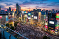
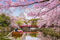
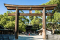
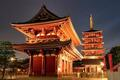
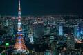

Multimédia
Conheça Tóquio através de fotografias, vídeo e poesia.
Fotografias Vídeo PoemaFotografias





Vídeo
Poesia
Tóquio desperta entre luzes e caminhos,
onde o futuro corre sobre carris.
Nos templos, o silêncio guarda memórias,
e nas ruas, o néon pinta a noite.
As cerejeiras anunciam a primavera,
enquanto a cidade nunca deixa de avançar.
Entre tradição e tecnologia,
cada esquina conta uma história diferente.
Ao longe, o Monte Fuji observa em silêncio,
como se o tempo parasse por um instante.
Tóquio é movimento, cor e contraste,
uma cidade que parece nunca dormir.
A minha cidade é muito linda!!!